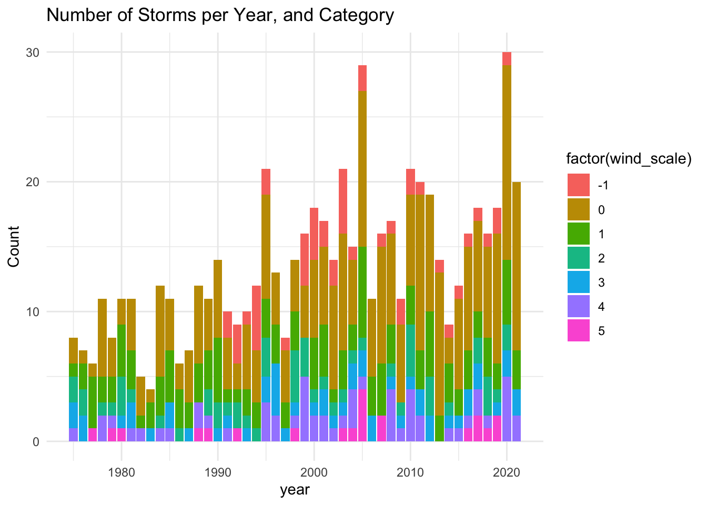
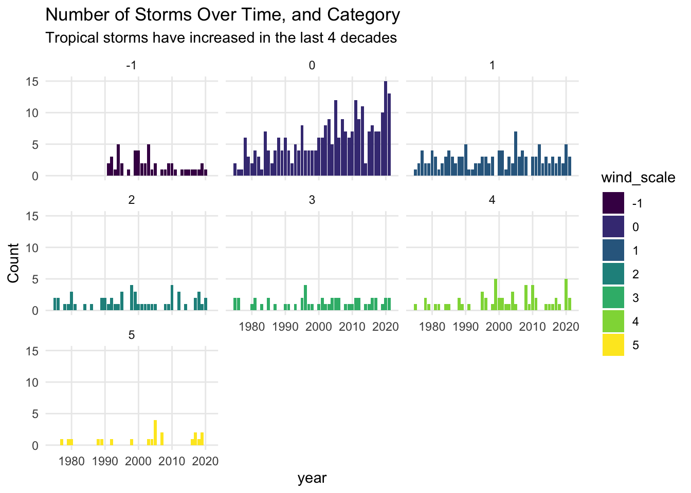

15 Counting All Types of Systems
So far we’ve found a satisfying way to count the number of tropical depressions as well as the number of tropical storms. We could adapt the recent commands to get a table with counts of hurricanes of category 1, another table for hurricanes of category 2, and so on and so for.
Interestingly, we can also identify the maximum category for each type of
system, all at once. All we have to do is remove the filter() command,
as follows:
system_status = storms %>%
group_by(year, name) %>%
summarise(
wind_max = max(wind),
.groups = "drop")
slice_head(system_status, n = 10)## # A tibble: 10 × 3
## year name wind_max
## <dbl> <chr> <int>
## 1 1975 Amy 60
## 2 1975 Blanche 75
## 3 1975 Caroline 100
## 4 1975 Doris 95
## 5 1975 Eloise 110
## 6 1975 Faye 90
## 7 1975 Gladys 120
## 8 1975 Hallie 45
## 9 1976 Belle 105
## 10 1976 Candice 8015.1 Handling Various Conditions
We can take a further step and add a column that displays the category status in text form.
How can you accomplish this? One nice option is with the case_when() function.
Let’s take a look at the command that gets the job done, and then we discuss it.
# adding a wind category status in text format
system_status = storms %>%
group_by(year, name) %>%
summarise(
wind_max = max(wind),
.groups = "drop") %>%
mutate(wind_scale = case_when(
wind_max <= 33 ~ -1L,
wind_max <= 63 ~ 0L,
wind_max <= 82 ~ 1L,
wind_max <= 95 ~ 2L,
wind_max <= 112 ~ 3L,
wind_max <= 136 ~ 4L,
wind_max >= 137 ~ 5L
)
)
slice_head(system_status, n = 10)## # A tibble: 10 × 4
## year name wind_max wind_scale
## <dbl> <chr> <int> <int>
## 1 1975 Amy 60 0
## 2 1975 Blanche 75 1
## 3 1975 Caroline 100 3
## 4 1975 Doris 95 2
## 5 1975 Eloise 110 3
## 6 1975 Faye 90 2
## 7 1975 Gladys 120 4
## 8 1975 Hallie 45 0
## 9 1976 Belle 105 3
## 10 1976 Candice 80 1To describe how case_when() works, let’s pay attention to the part of the
code that involves this command:
wind_scale = case_when(
wind_max <= 33 ~ -1,
wind_max <= 63 ~ 0,
wind_max <= 82 ~ 1,
wind_max <= 95 ~ 2,
wind_max <= 112 ~ 3,
wind_max <= 136 ~ 4,
wind_max >= 137 ~ 5
)As you can tell, the input to case_when() consists of multiple conditions
based on the variable wind_max. The first condition is:
wind_max <= 33 ~ -1This means that the value -1 will be associated to all the wind_max values
less than or equal to 33. Basically, this indicates a tropical depression.
The next condition is:
wind_max <= 63 ~ 0which means that 0 will be associated to all the wind_max values less than
or equal to 63 (but greater than 33). This indicates a tropical storm.
Observe also the use of the tilde ~ to indicate the output for each text value.
We can take a further step to add another column wind_categ that displays the
category status in text form. That is, for wind_scale == -1 have an associated
value of "td"; for wind_scale == 0 have an associated value of "ts"; for wind_scale == 1 have an associated value of "cat1", etc.
# adding a wind category status in text format
system_status = system_status %>%
mutate(wind_categ = case_when(
wind_scale == -1 ~ 'td',
wind_scale == 0 ~ 'ts',
wind_scale == 1 ~ 'cat1',
wind_scale == 2 ~ 'cat2',
wind_scale == 3 ~ 'cat3',
wind_scale == 4 ~ 'cat4',
wind_scale == 5 ~ 'cat5'
))
slice_head(system_status, n = 10)## # A tibble: 10 × 5
## year name wind_max wind_scale wind_categ
## <dbl> <chr> <int> <int> <chr>
## 1 1975 Amy 60 0 ts
## 2 1975 Blanche 75 1 cat1
## 3 1975 Caroline 100 3 cat3
## 4 1975 Doris 95 2 cat2
## 5 1975 Eloise 110 3 cat3
## 6 1975 Faye 90 2 cat2
## 7 1975 Gladys 120 4 cat4
## 8 1975 Hallie 45 0 ts
## 9 1976 Belle 105 3 cat3
## 10 1976 Candice 80 1 cat1With system_status we can then create a barchart, mapping wind_scale to
the fill attribute of the geom_col():
system_status %>%
count(year, wind_scale) %>%
ggplot() +
geom_col(aes(x = year, y = n, fill = factor(wind_scale))) +
labs(title = "Number of Storms per Year, and Category",
y = "Count") +
theme_minimal()
This barchart allows us to see how different storm categories are distributed over time. As we know from the graphics obtained in chapter 13, the number of systems shows an increasing trend. Despite the eye catching color palette, and the clear increasing pattern, it is hard to tell whether all the storm categories exhibit the growing trend.
An alternative visual display is to use facets so that we separate each category in its own frame (see below).
system_status %>%
count(year, wind_scale) %>%
ggplot() +
geom_col(aes(x = year, y = n, fill = factor(wind_scale))) +
facet_wrap(~ wind_scale) +
labs(title = "Number of Storms Over Time, and Category",
subtitle = "Tropical storms have increased in the last 4 decades",
y = "Count") +
theme_minimal() +
theme(panel.grid.minor = element_blank())
In this plot we can easily see that the main type of systems that have been constantly increasing every decade are tropical storms (category 0). This pattern was not so evident in the preceding graphic that does not have facets. If you look at hurricanes of category 3, their number seems to remain stable between 0 and 2 almost every year.
One last step: what happens if we specify wind_scale as an ordinal factor?
Since the numeric scaled in wind_scale is an ordinal scale, we can take
advantage of R’s factors and make this column an ordered factor via the function
ordered(). The visual benefit of doing this is that ggplot() will use a
special color palette called viridis which relies on a sequence of blues and
yellows, while avoiding reds, in order to increase the readability of data
visualizations.
system_status = system_status |>
mutate(wind_scale = ordered(wind_scale))
system_status %>%
count(year, wind_scale) %>%
ggplot() +
geom_col(aes(x = year, y = n, fill = wind_scale)) +
facet_wrap(~ wind_scale) +
labs(title = "Number of Storms Over Time, and Category",
subtitle = "Tropical storms have increased in the last 4 decades",
y = "Count") +
theme_minimal() +
theme(panel.grid.minor = element_blank())